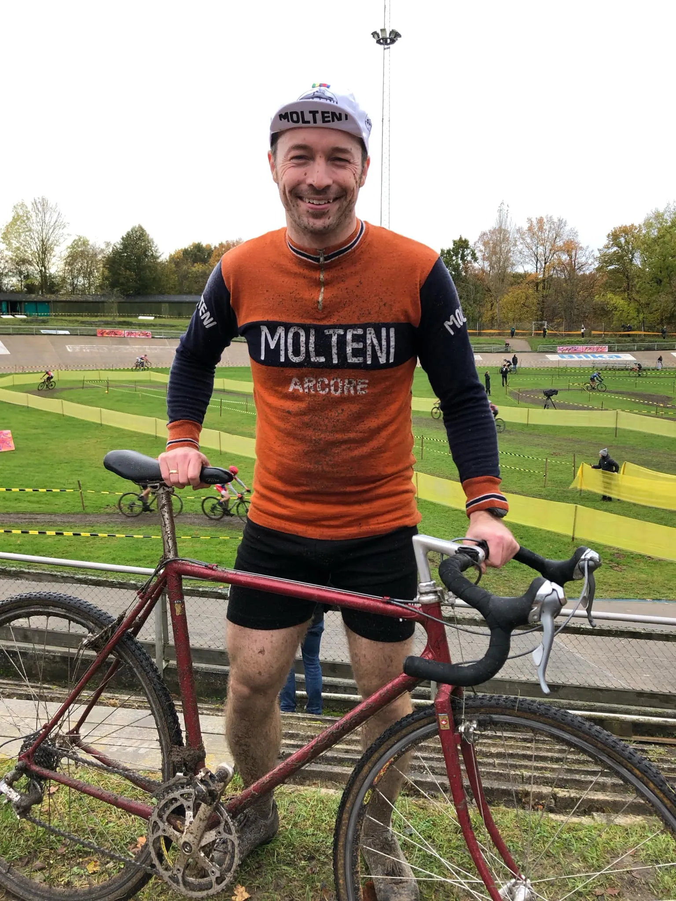

Debutsejr til Flemming Lohmann Madsen ved Grote Prijs

Sidste dans på Aarhus Cyklebane? CK Aarhus bød på Grote Prijs cykelcross lørdag og søndag og selvom nedrivningen er forsinket var det sandsynligvis den sidste chance for at køre løb på den århusianske betonbane. Squadra Molteni var selvfølgelig med, da Flemming Lohmann Madsen søndag sejrede i stålklassen i sit første cykelcrossløb.
Jeg overvejede at stille op også lørdag, men her lovede vejrudsigten tørvejr, hvilket føltes helt forkert til en debut i cykelcross. Jeg ventede derfor til søndag, hvor regnen silede ned både før og under den første del af løbet, udtaler Flemming.
Med rigtigt crossvejr blev græsset hurtigt til mudder og ruten tung og glat. Speaker Joachim Parbo prøvede at bilde publikum ind, at en uldtrøje bliver tung som en middelalderbrynje i regn, men det er helt forkert; uld bliver kun hurtigere af lidt vand! Flere af de øvrige ryttere blev overraskede over, hvor hurtigt en stålcykel kommer igennem en opkørt sandgrav.
Flemming er klar til mere cross;
Mudder skulle være godt for huden, så jeg tror jeg tager et par løb mere senere på sæsonen” udtaler han.
